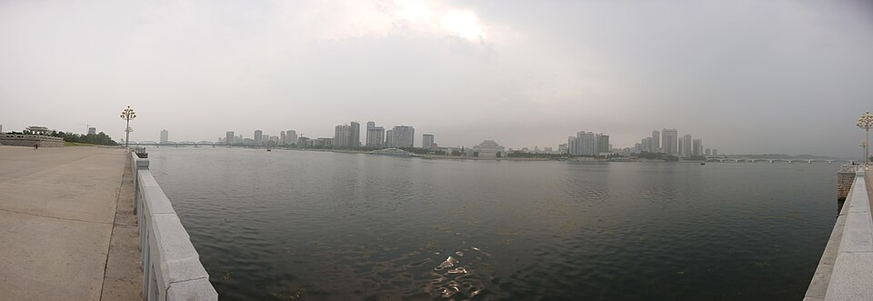
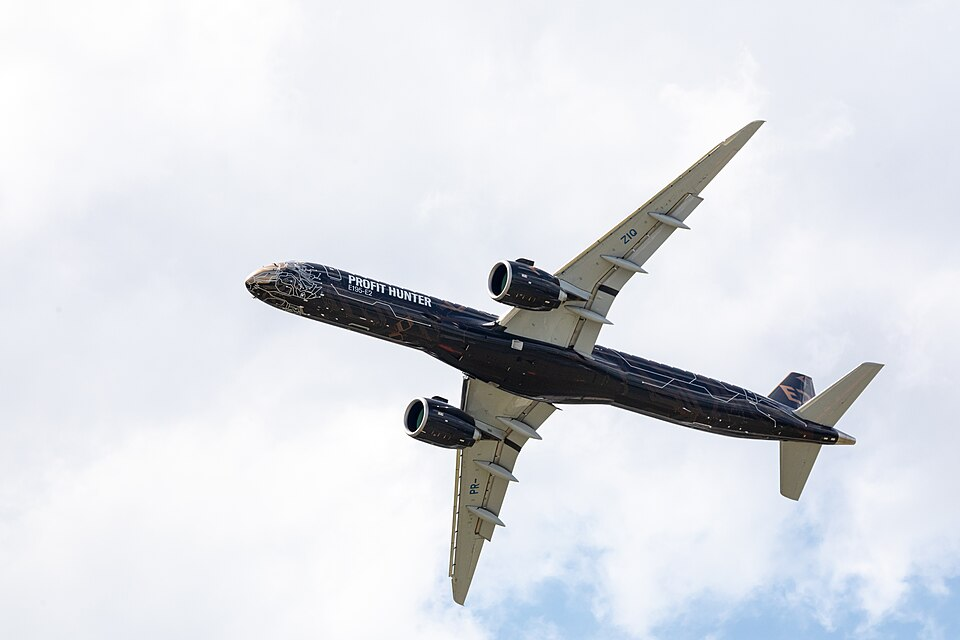
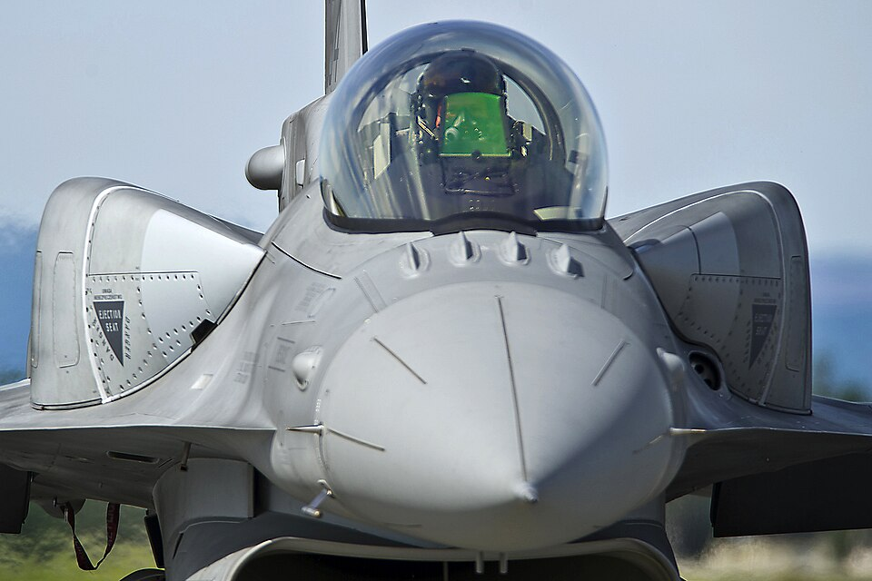
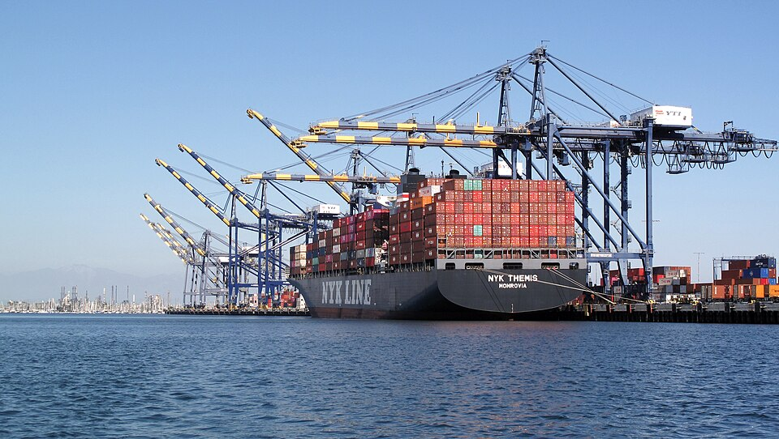
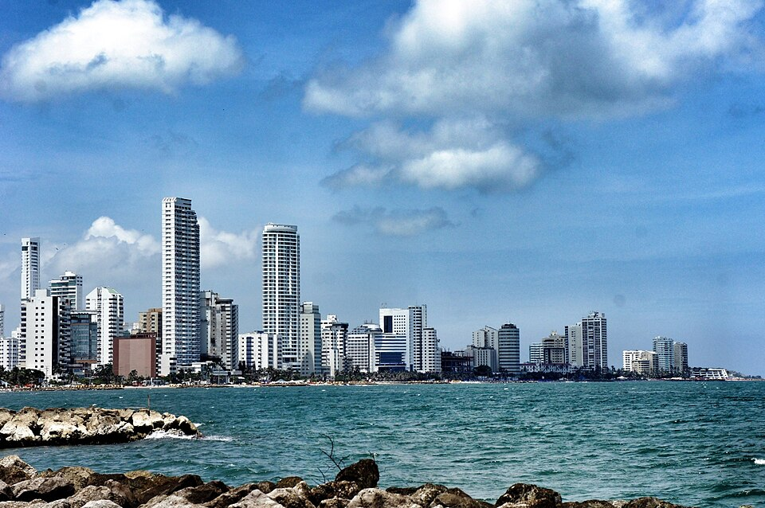
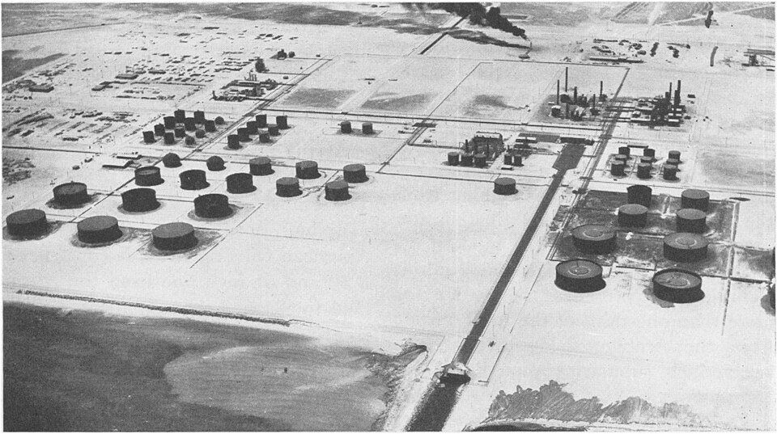
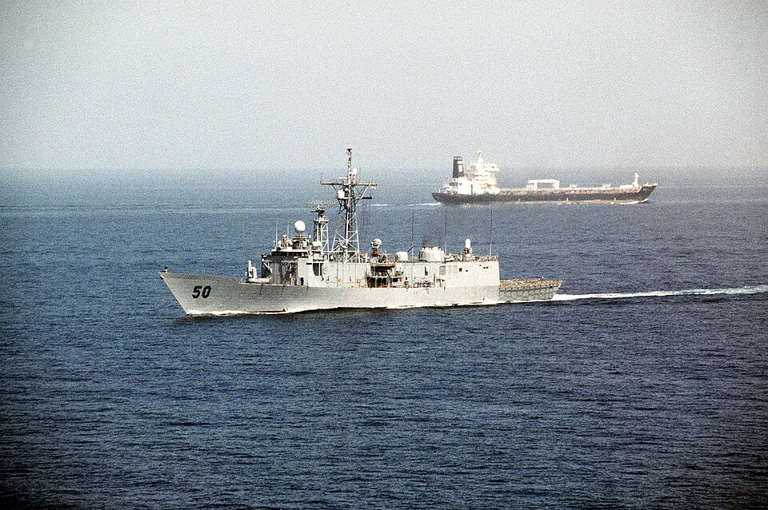
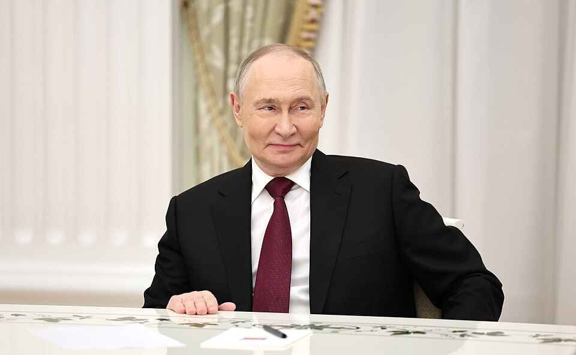
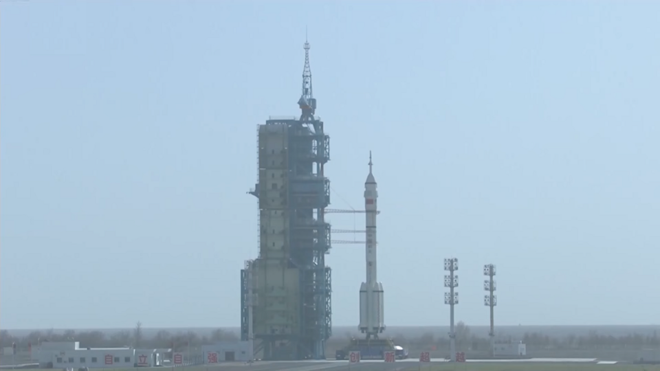

TheGangNewsOfficial
Daily news in 60 seconds. Short, neutral news from around the world, every day, with the source named for each story.
Latest updates
26 Nov 2026, 16:30 Cairo
الحرس الثوري الإيراني: انفجار ناقلتي نفط بعد اصطدامهما بألغام بحرية قرب ميناء خصب العُماني. قال الحرس الثوري الإيراني الخميس إن ناقلتين انفجرتا واشتعلت فيهما النيران بعد اصطدامهما بألغام بحرية شمال ميناء خصب في عُمان، أثناء محاولتهما عبور مضيق هرمز عبر مسار غير مصرح به، وإن إحداهما ناقلة عملاقة تحمل أكثر من مليوني برميل من النفط الخام. هذه رواية الحرس الثوري ولم تؤكدها جهة مستقلة حتى الآن.
المصادر: Arab News (رويترز), ABC News, Al Arabiya English
26 Nov 2026, 16:15 Cairo
غزة: مقتل خالد أبو ندى وزوجته في غارة إسرائيلية على دير البلح. قال مسعفون ومسؤولون صحيون في غزة إن ثماني فلسطينيين على الأقل قُتلوا في ثلاث غارات إسرائيلية، بينهم خالد أبو ندى وكيل وزارة التربية في حكومة حماس وزوجته. وأعلن نتنياهو وكاتس أن الجيش قتل أبو ندى، ووصفه الجيش بأنه مسؤول عن الشؤون الاقتصادية لحماس. هذه روايات الأطراف المعنية، وقد جاءت الغارات رغم وقف إطلاق النار القائم.
المصادر: Al Jazeera, AP, Times of Israel
13. World
Myanmar says it will not comply with parts of the ICJ genocide ruling
File photo of the Peace Palace in The Hague, where the International Court of Justice sits. Photo: Txllxt TxllxT, CC BY-SA 4.0, via Wikimedia Commons.
Myanmar’s leader, President Min Aung Hlaing, said on Wednesday that his government will not comply with the parts of last week’s International Court of Justice ruling that it considers "inappropriate". The court found that Myanmar committed genocide against the Rohingya minority. He said the government would take the actions it considers appropriate as a responsible state. Reports say he did not list which parts it rejects. The remarks come from Myanmar’s government and state media. Rohingya groups and rights organizations have called for the ruling to be implemented.
Sources: BBC, AP, Channel News Asia
12. World
Kim Jong Un visits nuclear sites and calls for more nuclear weapons

File photo of the Pyongyang skyline. Not a photo of the nuclear sites, which state media did not locate. Photo: Jan Engelhardt, CC BY-SA 4.0, via Wikimedia Commons.
North Korean state media (KCNA) reported on Thursday that Kim Jong Un toured nuclear material production sites and a nuclear weapons research institute on Wednesday. KCNA quoted him as saying production capacity is being expanded, tactical nuclear weapons should be deployed more widely, and the country’s nuclear status is "absolutely inviolable". KCNA did not say where the sites are. These are claims from North Korean state media, and the outlets cited here did not independently verify them.
Sources: AP, DW, Reuters via Investing.com
11. Business
Brazil and China push back on new US tariff proposals

File photo of an Embraer E195-E2 jet at the 2019 Paris Air Show. Not a photo related to the tariff dispute. Photo: Matti Blume, CC BY-SA 4.0, via Wikimedia Commons.
After the US proposed new tariffs on 14 partners, Brazil’s government called the proposal on its aircraft and sugar an "unacceptable action" and said it will not yield to threats, without ruling out reciprocal measures. Brazil says Washington is trying to pressure it over its regulations, including the Pix payment system. China’s embassy and foreign ministry rejected the "overcapacity" claim as a pretext for "political manipulation" and called for dialogue, without threatening retaliation. These are the governments’ own statements. The US has proposed these tariffs, not finalized them.
Sources: The Guardian, Al Jazeera, Xinhua
10. World
Poland plans a no-fly zone along its border with Ukraine

File photo of a Polish Air Force F-16C. Not a photo of the border area or of any recent incident. Photo: US Air Force photo, public domain, via Wikimedia Commons.
Polish Deputy Defense Minister Cezary Tomczyk said on Wednesday that Poland will set up a no-fly zone inside its eastern border with Ukraine, with a regulation expected around late December or early January. Poland blames Russia for recent missile and drone incursions into its airspace. The reports do not include a Russian response.
Sources: AFP via Al Arabiya, DW, PAP
9. Business
US proposes new tariffs on 14 trading partners including China and the EU

File photo of a container ship at the Port of Los Angeles. Not a photo related to the announcement. Photo: Downtowngal, CC BY-SA 4.0, via Wikimedia Commons.
The US Trade Representative said on Wednesday it found that 14 economies’ manufacturing policies are actionable under Section 301 and proposed new tariffs. Reuters reports headline rates of 20% to 40%, with duties capped at lower levels for partners that have trade deals with Washington. BBC reports China faces the highest rate, up to 40%. Politico reports the duties are not likely to take effect until the new year. These are proposals, not final rates.
Sources: Reuters, BBC, Politico
8. World
Colombian forces free hostages held at a Cartagena supermarket

File photo of the Cartagena skyline. Not a photo of the supermarket or the operation. Photo: poirpom, CC BY 2.0, via Wikimedia Commons.
Security forces stormed an Exito supermarket in Cartagena early Wednesday and freed the remaining hostages after a siege of about 17 to 18 hours, according to President Abelardo de la Espriella. Authorities said one of the armed men was killed. BBC reports the gunmen entered on Tuesday after what local media said was a failed armored-car robbery. Hostage numbers vary in reports: about 30 were first held, 10 were released earlier, and about 20 remained.
Sources: BBC, AP, The Guardian
1. Middle East
Saudi-led coalition says it downed four drones over Ras Tanura

Archive photo of the Ras Tanura oil facility, Eastern Province, Saudi Arabia. Not a photo of today’s event. Photo: Aramco, public domain, via Wikimedia Commons.
The coalition said air defenses intercepted four drones over Ras Tanura in the Eastern Province and an initial assessment found no casualties. A day earlier, Saudi Civil Defense said 11 people were injured in a Houthi attack on a Riyadh financial district tower, as the coalition described it.
2. Middle East
Iran’s IRGC says oil tankers hit mines in the Strait of Hormuz

Archive photo (1990) of a warship passing a tanker near the Strait of Hormuz. Not a photo of the reported incident. Photo: US Department of Defense, public domain, via Wikimedia Commons.
The IRGC Navy, in statements carried by Iranian state media, said tankers using an "unauthorized route" struck naval mines and caught fire. Reports differ on the number of ships between statements. These are Iranian claims, and this page has not independently confirmed them.
Sources: Anadolu, Arab News, Al Jazeera
3. World
Putin says Russian retaliation for refinery strikes is "inevitable"

Russian President Vladimir Putin, December 2025 file photo. Photo: Kremlin.ru, CC BY 4.0, via Wikimedia Commons.
Speaking on Tuesday, Putin said Ukraine keeps attacking Russian oil refineries despite a request from US President Trump, and that Russia will respond. Ukraine’s position was not part of these reports.
Sources: Al Jazeera, Al Arabiya, Reuters via Investing.com
4. Sport
CAS reinstates Senegal as 2025 Africa Cup of Nations champions
Archive photo: Yaya Touré lifting the Africa Cup of Nations trophy in 2015. Not from the 2025 final. Photo: Ben Sutherland, CC BY 2.0, via Wikimedia Commons.
The Court of Arbitration for Sport overturned a CAF appeals board decision that had awarded the title to Morocco. Morocco’s football federation said it objects to the ruling.
5. Tech
China launches Shenzhou-24 with Pakistan’s first astronaut

File photo of a Shenzhou 22 rocket on the pad at Jiuquan. Not from today’s Shenzhou-24 launch. Photo: China News Service, CC BY 4.0, via Wikimedia Commons.
China launched Shenzhou-24 with two Chinese astronauts and Pakistani pilot Zeeshan Ali, the first foreign astronaut to fly to China’s Tiangong space station.
6. Business
Huawei convicted at US trial, cleared of racketeering conspiracy
File photo of a Huawei showroom at its Shenzhen headquarters. Photo: RG72, CC BY-SA 4.0, via Wikimedia Commons.
A federal jury in Brooklyn found Huawei guilty of charges including conspiracy to steal trade secrets and bank fraud, and not guilty of the racketeering conspiracy charge. Huawei said it disagrees with the verdict.